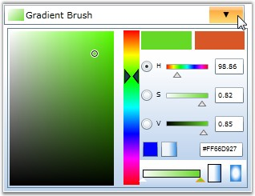

You have now created a Silverlight application and deployed Essential Tools. Let's see how to add BrushSelector control to this application.
BrushSelector can be added to the Silverlight application by using either XAML or C# code. The following code sample illustrates how to add the BrushSelector control to the application.
|
[XAML]
<syncfusion:BrushSelector Height="150" Width="300" Name="brushselector" /> |
|
[C#]
BrushSelector brushselector = new BrushSelector(); grid.Children.Add(brushselector); |
The preceding code adds the following control to the application.

Figure 346: BrushSelector